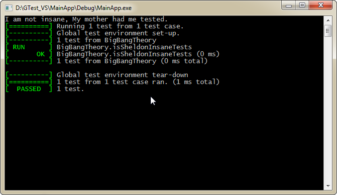

Installing and Using GoogleTest with Visual Studio
#cplusplus #google-test #unit-testingGoogle C++ Testing Framework ( aka Google Test) is most popular Unit testing framework for C++. This post describes how to install, set up gtest in a c++ project with Visual Studio. Google Mock project has been absorbed into the GoogleTest project, in case you are looking for Google Mock specifically.
Set up Application Project
This would be the project will run Unit Test.
- Open Visual Studio, Create new project for console application. Let’s name it MainApp
- Hit OK and then Finish.
- Just add one print statement in main.cpp and build. If it builds, lets proceed to set up google test.
Install Google Test
- Download Google Test Framework from GoogleTest and extract zip.
- Open existing MainApp Solution and add new project. Make sure you choose win32 project and not win32 console application. Lets name it GTestLib.
- Hit Okay , then Next.
- Select ‘Static Library’ & ‘empty project’ option. Un-check ‘Pre-compiled header’ and hit Finish.
- Now Right click GTestLib and add ‘gtest-all.cc’ to the project. You can find it under ‘googletest-master\googletest\src’.
- Build GTestLib.
- GTestLib -> Right Click -> properties -> Configuration Properties -> VC++ Directories -> Include Directories. Add include path to ‘googletest-master\googletest\’ and ‘googletest-master\googletest\include’ to resolve build errors.
Note : Include dirs can be added to ‘C/C++ -> General -> Additional Include Directories’ for cleaner solution. - Build should succeed now. Note the path for build ‘GTestLib.lib’
- Similar setup needs to be done for google-mock if one want to use google-mock. We would limit this article to Google test only.
Setting Up Google Test in Application Project
- MainApp project -> Right Click -> properties -> Configuration Properties -> VC++ Directories -> Include Directories -> Add ‘googletest-master\googletest\’ and ‘googletest-master\googletest\include’ directories like we did in GtestLib.
- MainApp project > Right Click -> properties -> Configuration Properties -> VC++ Directories -> Add ‘GTestLib.lib’ path to ‘Library Directories’.
- Add ‘GTestLib.lib’ in ‘additional dependencies’ available under Linker -> input

- Now we are ready to write some unit tests.
- Replace your MainApp.cpp content with below code:
#include "stdafx.h"
#include "stdio.h"
#include "gtest/gtest.h"
int isSheldonInsane()
{
return -1;
}
TEST(BigBangTheory, isSheldonInsaneTests)
{
EXPECT_EQ(-1, isSheldonInsane());
}
int main()
{
printf("I am not insane, My mother had me tested.\n");
// Lets ignore him and run Test again to ensure.
int local_argc = 1;
char* local_argv = "";
::testing::InitGoogleTest(&local_argc, &local_argv);
RUN_ALL_TESTS();
char* iAmJustABlockingString =" ";
gets_s(iAmJustABlockingString,10);
return 0;
}
Build and Run, You should see google test being run in console.

Comments